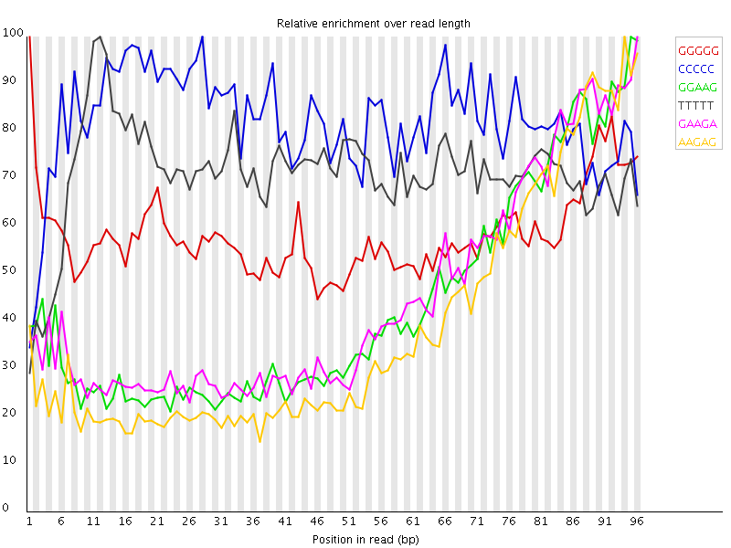

Thu 6 Sep 2012
5_120719_BD158KACXX_2_nophix-sort-dup.bam
Summary
![[FAIL]](Icons/tick.png) Basic Statistics
Basic Statistics
| Measure |
Value |
| Filename |
5_120719_BD158KACXX_2_nophix-sort-dup.bam |
| File type |
Conventional base calls |
| Total Sequences |
382410 |
| Sequence length |
101 |
| %GC |
46 |
Back to summary
![[FAIL]](Icons/warning.png) Kmer Content
Kmer Content

| Sequence |
Count |
Obs/Exp Overall |
Obs/Exp Max |
Max Obs/Exp Position |
| GGGGG |
102575 |
3.6990204 |
6.33536 |
1 |
| CCCCC |
71545 |
3.3921564 |
4.1192694 |
28 |
| GGAAG |
120695 |
3.259428 |
7.5183954 |
95 |
| TTTTT |
145935 |
3.1710455 |
4.432788 |
12 |
| GAAGA |
124940 |
2.919827 |
6.573525 |
96 |
| AAGAG |
118570 |
2.7709615 |
7.2465825 |
94 |
| AGATC |
102775 |
2.649168 |
7.559764 |
92 |
| AGAGC |
90945 |
2.594187 |
6.6953974 |
96 |
| GGAGG |
79405 |
2.4779727 |
5.257761 |
3 |
| GATCG |
72265 |
2.1525168 |
7.5205445 |
93 |
| ATCGG |
70015 |
2.0854971 |
7.4919496 |
94 |
| TCGGA |
68360 |
2.0362008 |
7.334676 |
95 |
| CGGAA |
69150 |
1.9724891 |
7.147234 |
96 |
| GGGGA |
62305 |
1.9443372 |
5.003112 |
1 |
| AGGGA |
67665 |
1.827327 |
5.0554733 |
1 |
| AGGGG |
55930 |
1.7453942 |
5.482452 |
1 |
| AGGCA |
55010 |
1.5691488 |
5.011279 |
1 |
| AGGTG |
53675 |
1.5136319 |
5.360292 |
1 |
Back to summary
![[FAIL]](Icons/error.png) Per base sequence quality
Per base sequence quality